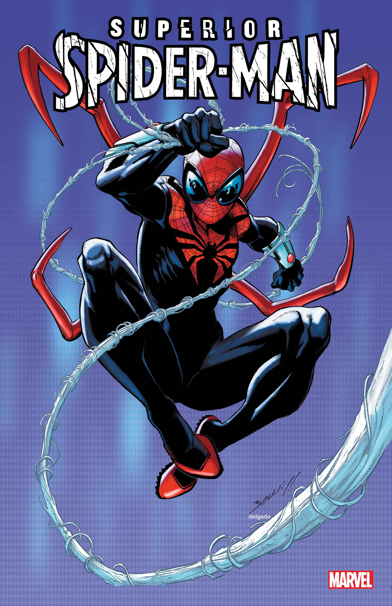
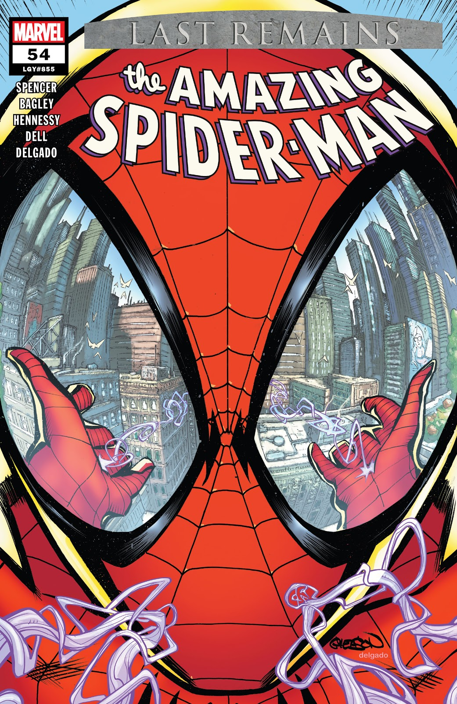
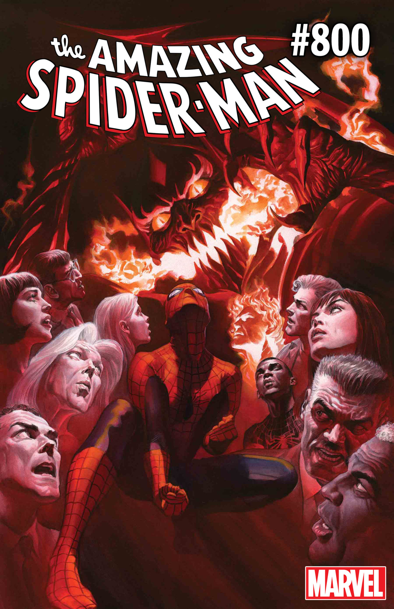

Amazing Fantasy #15
La legendaria primera aparición de Spider-Man en 1962.

The Amazing Spider-Man #300
La icónica portada de Todd McFarlane presentando a Venom.

Portada Clásica
Una de las muchas aventuras clásicas del trepamuros.

Batalla Épica
Spider-Man enfrentándose a uno de sus mortales villanos.

Un Momento Decisivo
Las portadas de Spider-Man a menudo definen generaciones.